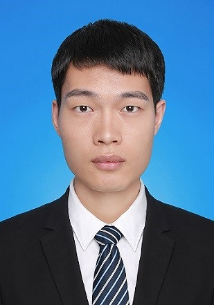
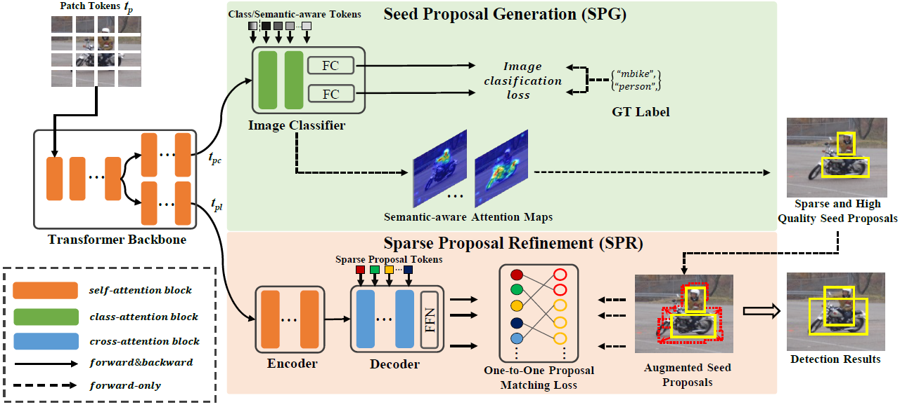
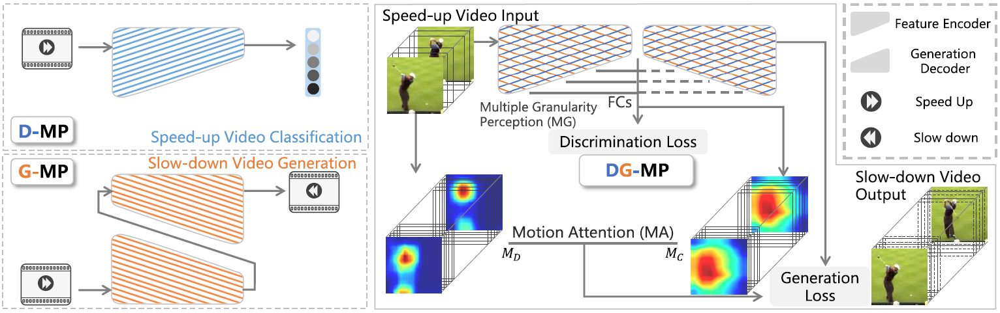
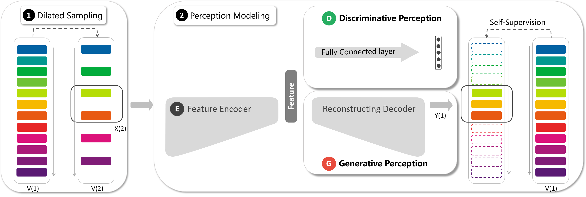
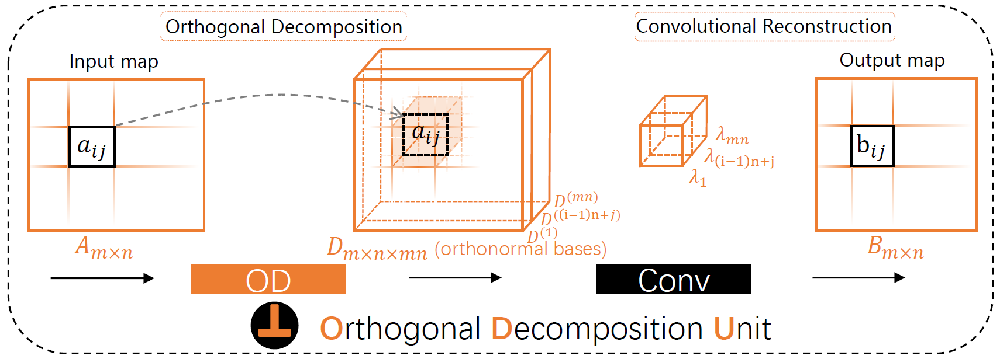

Yuan YaoPhD CandidateRoom 330, A2 Building
|
 |

Biography
I am a Ph.D. candidate in Pattern Recognition and Intelligent System Development Laboratory (PriSDL) at University of Chinese Academy of Sciences (UCAS), supervised by Prof. Qixiang Ye. I got a B.Eng degree of Electronics Science and Technology at Beijing Jiaotong University (BJTU) in July 2017.
My research interests include computer vision and machine learning, specifically for weakly-supervised learning, self-supervised learning and object detection/localization. I am opening to all other interesting topics.
Publications
|  | End-to-End Weakly Supervised Object Detection with Sparse Proposal Evolution
Mingxiang Liao, Fang Wan, Yuan Yao, Zhenjun Han, Zou Jialing, Yuze Wang, Bailan Feng, Peng Yuan, Qixiang Ye European Conference on Computer Vision (ECCV), 2022 [Code] |
|  | Self-Supervised Motion Perception for Spatiotemporal Representation Learning
Chang Liu, Yuan Yao, Dezhao Luo, Yu Zhou, Qixiang Ye IEEE Transactions on Neural Networks and Learning Systems (TNNLS), 2022 [Paper] [Code] |
|  | Video Playback Rate Perception for Self-Supervised Spatio-Temporal Representation Learning
Yuan Yao, Chang Liu, Dezhao Luo, Yu Zhou, Qixiang Ye IEEE/CVF Conference on Computer Vision and Pattern Recognition (CVPR), 2020 [Paper] [Code] |
|  | Orthogonal decomposition network for pixel-wise binary classification
Chang Liu, Fang Wan, Wei Ke, Zhuowei Xiao, Yuan Yao, Xiaosong Zhang, Qixiang Ye IEEE/CVF Conference on Computer Vision and Pattern Recognition (CVPR), 2019 [Paper] |
{kind=link}
{kind=link}
{kind=link}
{kind=link}
Patents
A Self-Supervised Video Spatio-Temporal Representation Learning Method based on Frame Rate Perception
Qixiang Ye, Yuan Yao, Fang Wan, Yan Zhang, Jianbin Jiao and Zhenjun Han
China Invention Patent, Publication Patent Number: CN202010281494.0
Awards
- The Second Prize Scholarship of University of Chinese Academy of Sciences, 2021, 2020, 2018
- Merit Student of University of Chinese Academy of Sciences, 2020
Statistics
© Tianning Yuan | Last updated: May 2022